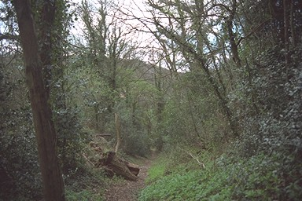

Looking up from the bottom in Cherry Tree Hill.

Before the trees grew, workers would have had a view of Benthall Edge - itself not wooded when this incline was working.
The straight line up through the trees would be unususal in a path of pedestrian origin.
The top of the incline is where the water and the boats both stopped - only the containers, not the boats themselves, went down this incline.
It's a pity from the historian's point of view that there is no longer a clear view all the way down.